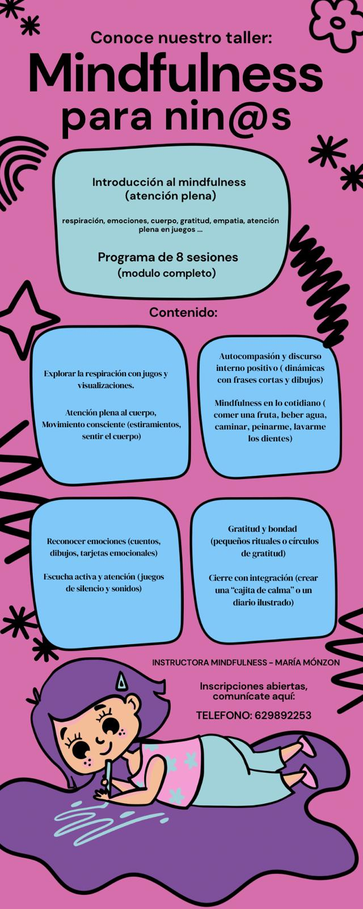
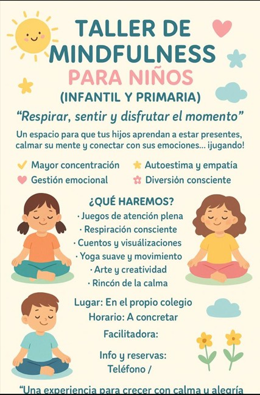

Un taller diseñado para que los niños y niñas aprendan a conectar con la calma, gestionar emociones y desarrollar atención plena a través del juego, el movimiento y la creatividad.

Plazas disponibles. Contacta para más información o reservas.

Un espacio para que los más pequeños aprendan a estar presentes, calmar la mente, conectar con sus emociones y divertirse mientras aprenden mindfulness.
Horario: A concretar
Lugar: En el propio colegio
Teléfono: 629 89 22 53
Un taller complementario diseñado para profundizar en la atención plena a través del juego, la expresión emocional y la creatividad.